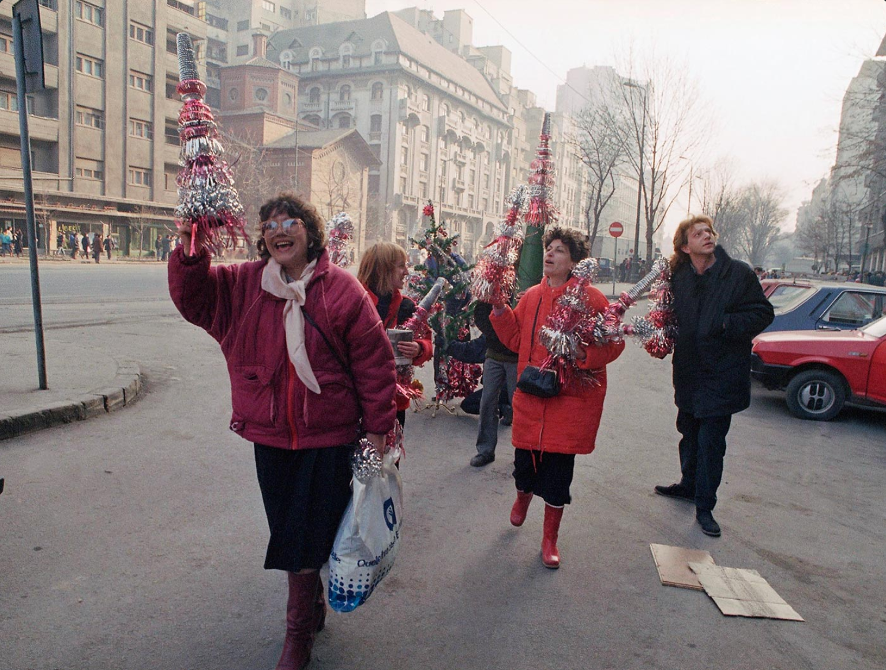
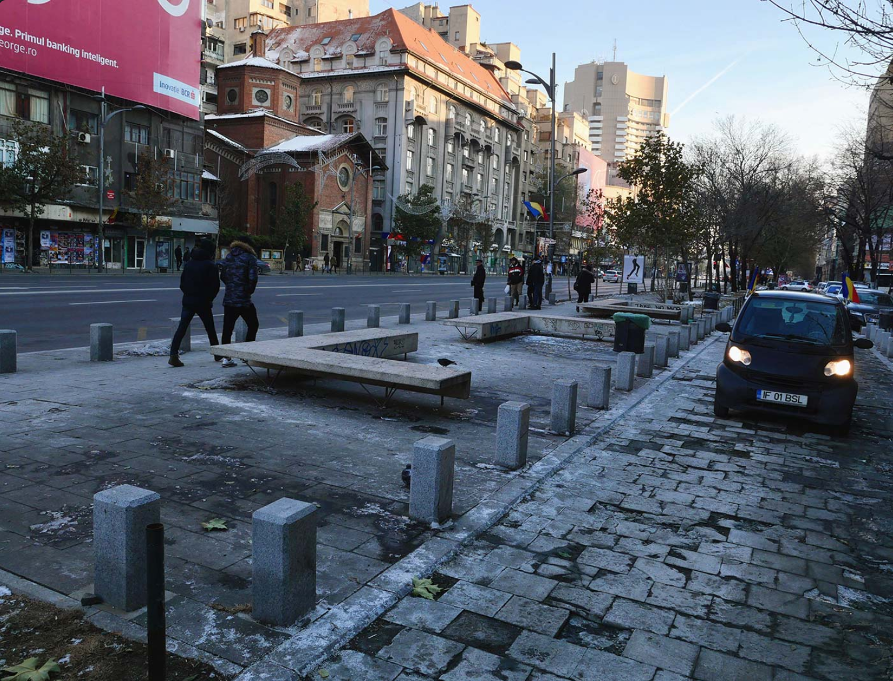

Revoluția din România a uimit lumea prin violența ei: peste o mie de oameni uciși și un sfârșit nemilos pentru soții Ceaușescu. Detaliile tulburi ale revoltei aveau să iasă la suprafață mai târziu. Pe 25 decembrie 1989, festivitățile au împânzit România, pentru că pentru prima dată în 40 de ani, oamenii au sărbătorit Crăciunul în libertate.
București 1989
Femei cu pomi de Crăciun în centrul capitalei, pe 25 decembrie.
București 2020
Același loc astăzi.